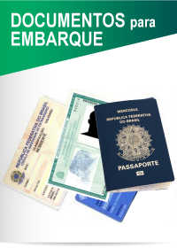

DICAS PARA UMA BOA VIAGEM
Para uma viagem tranquila são necessárias algumas precauções, como verificar tamanho, peso e quantidade das bagagens, evitar levar certos itens nas bagagens, verificar a restrição de líquidos para embarque em aeroportos; caso for embarcar algum animal (pet), verificar os procedimentos necessários; verificar documentos necessários para o embarque, etc. Abaixo listamos algumas dicas e instruções para um bom e tranquilo embarque. Para viagens internacionais, certos documentos são necessários, como passaporte, vistos consulares, kosseki tohon (para categoria específica de visto Japonês),etc. Clique nas imagens ou links abaixo para maiores informações:
DICAS PARA EMBARQUE
